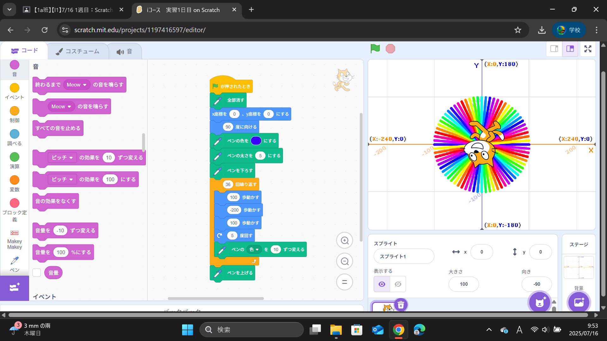
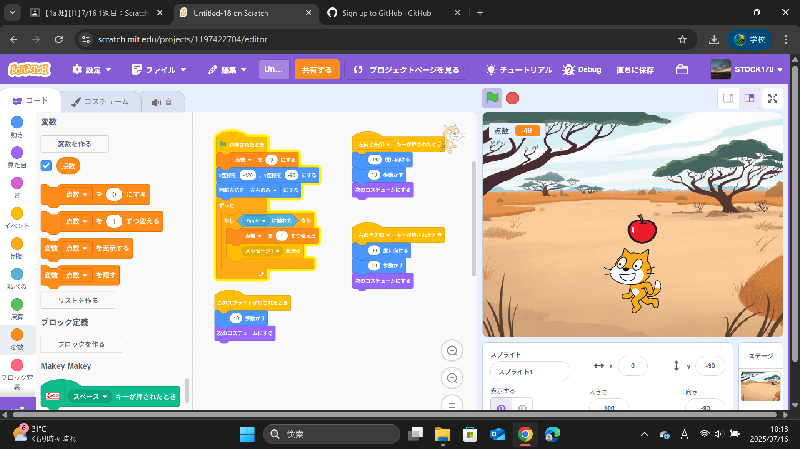

1週目のレポート ： 公大高専１年実習I-1
1a班04番 稲葉玲音
第1週目
1-1 サイエンスアート

1.内容
Scratchを使用して、ネコを動かし線を引いて図形を描くプログラムを作成した。
初期位置の設定、回転と移動の組み合わせ、ペン機能を使ってプログラム[(15度回転+1歩動かす)×50回繰り返す=360度の円が出来る。]して円を描いた。
また、プログラムを応用して色々な円を描いた。
2.感想
ブロックを組み合わせるだけで、複雑な動きを簡単に実現できるのが面白かったです。
また、円を描くプログラムは、「繰り返し」の概念を視覚的に理解できました。
自分で応用して様々な円を描けたので、達成感も大きかったです。
1-2 ゲーム

1.内容
2.感想
プログラミングで円を描くのでさえ、とても大変だと感じた。
さらに複雑なものを一から作り上げるには、根気強く試行錯誤していく必要があると実感しました。
これから、小さなステップを重ねていくことで、必ず大きな達成感を得られると信じています。
1-3 ホームページ作成
私のホームページ
1.内容
GitHub Pagesを使ってホームページを公開した。
コマンドを使い、コミットしてプッシュするだけで基本的な作成方法を理解して簡単にホームページを作成した。
2.感想
コマンドを使い慣れていなくても、コミットとプッシュだけで更新できる手軽さに感動しました。
バージョン管理もできるので、安心して作業を進められる点が素晴らしいと感じました。
各ページへのリンク
1週目のレポート
2週目のレポート
3週目のレポート
私のホームページ